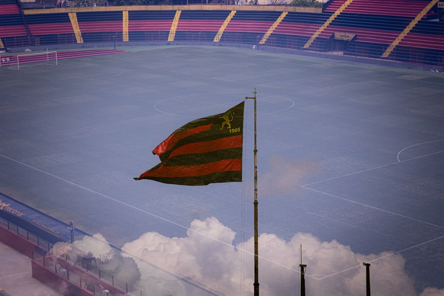
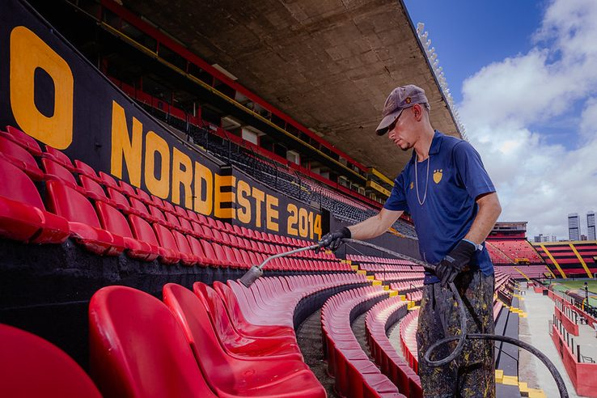

dezembro
INício, reestruturação
e planejamento
- Início da gestão no dia 19 de dezembro de 2025: 3 folhas do futebol atrasadas, 40 mil no caixa e a sede inutilizável;
- Construção do planejamento de curto prazo, início de negociação com atletas
do elenco e do mercado;
- Renegociação com a empreiteira para viabilizar o início das obras do teto do Salão Social;
- Revitalização da Ilha do Retiro
- Negociação e escolha da Ticketeira para as próximas temporadas.

